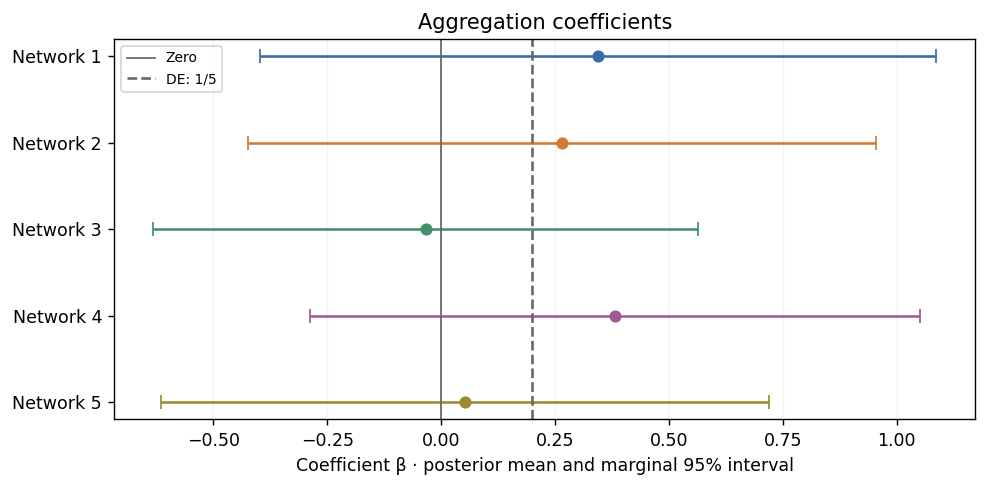
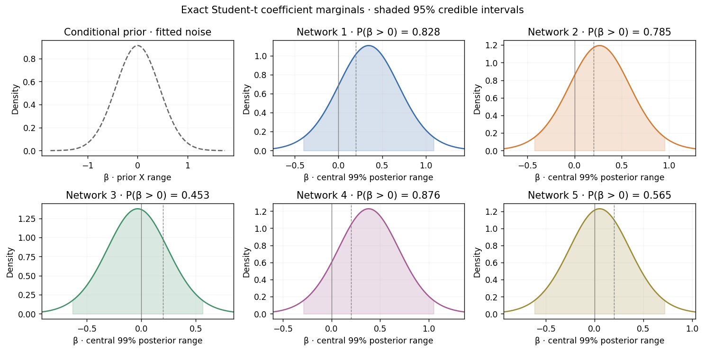
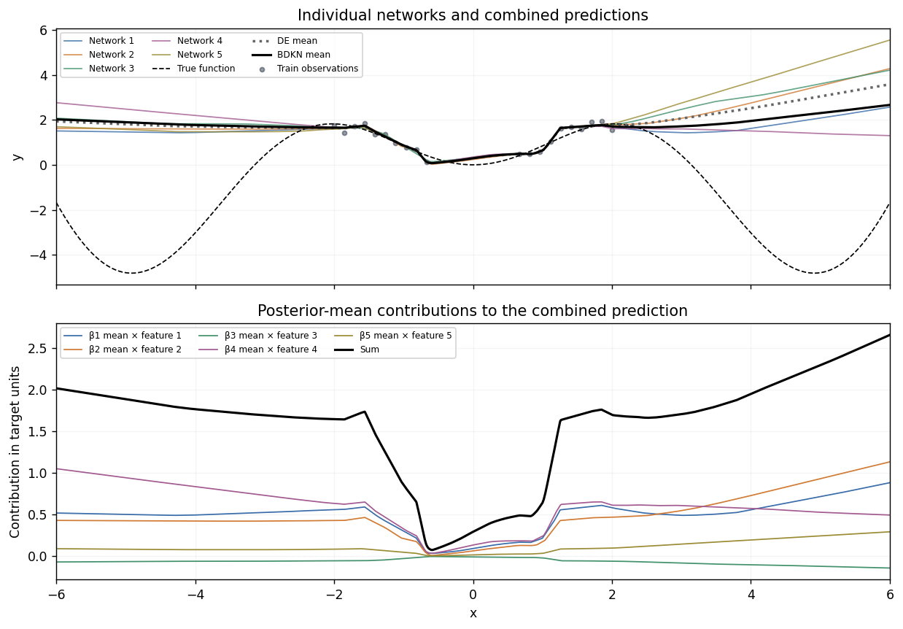
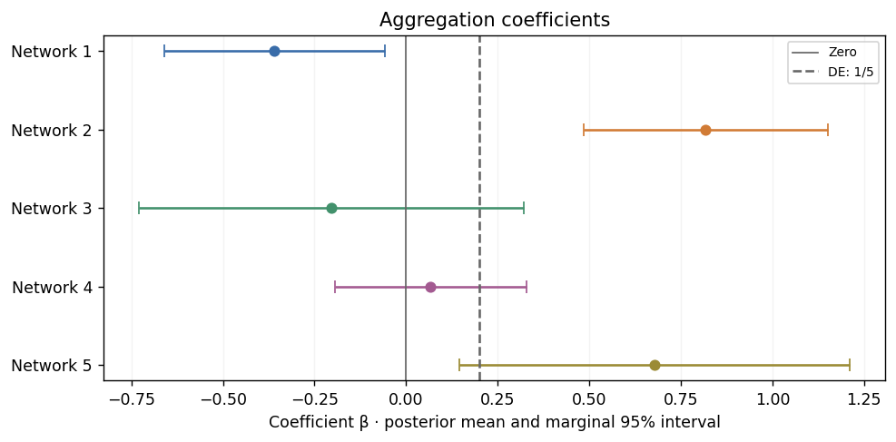
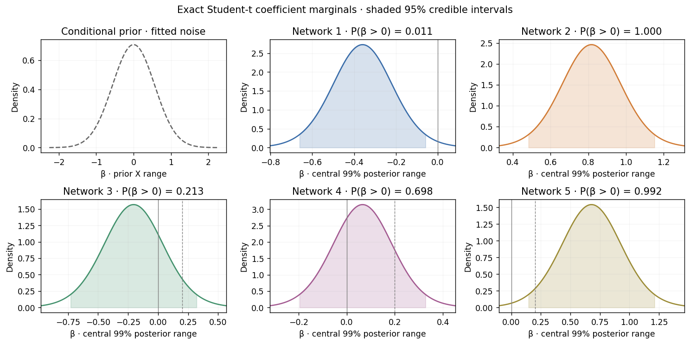
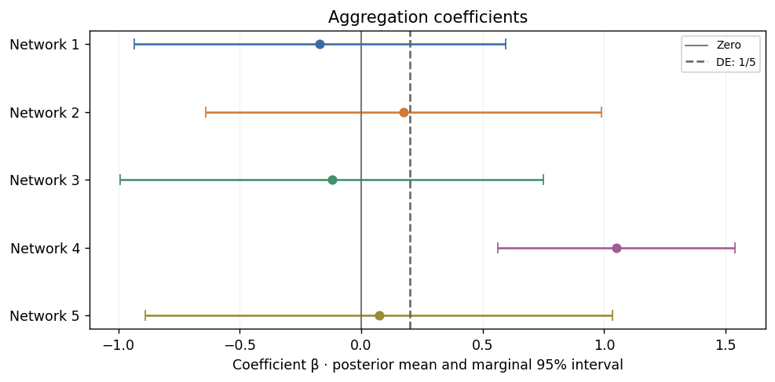
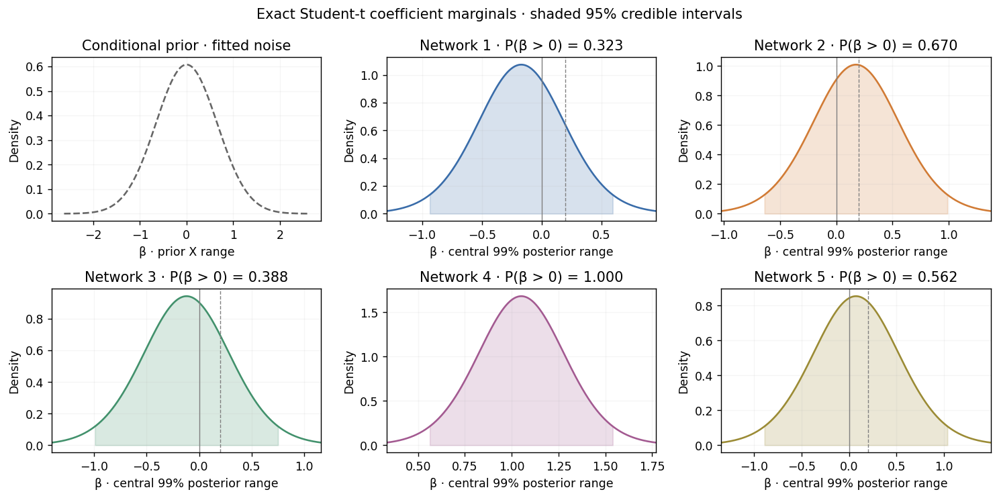
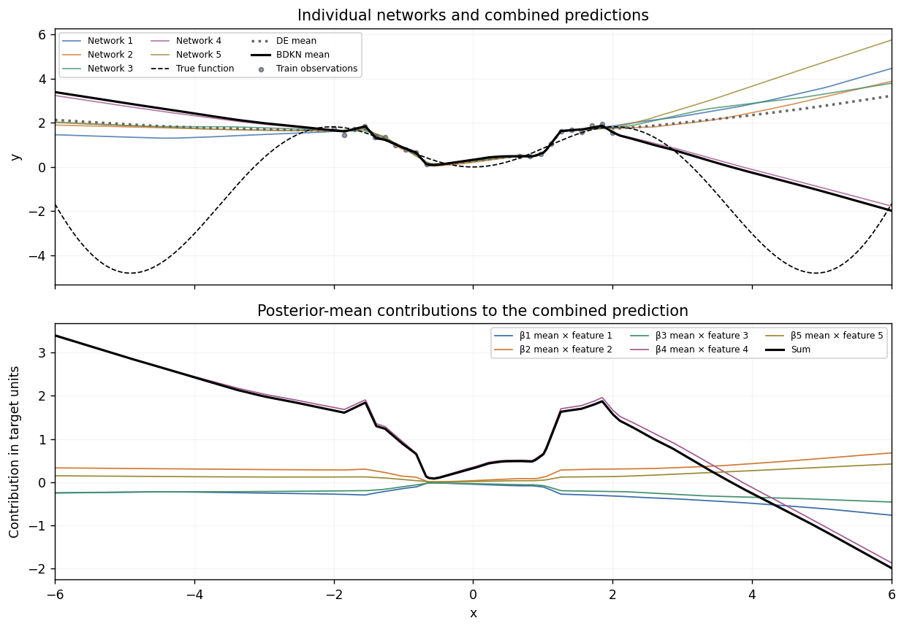

Regression comparison
Download resultsAggregation weights
Coefficients can be negative and need not sum to one. Intervals describe coefficient uncertainty; the dashed reference is DE’s fixed 1/H weight.
BDKN


Each density panel uses its own X range for readability; coefficient intervals above share a common axis. Prior reference conditions on fitted noise. Contribution shares use held-out inputs; test targets are used only for scoring.
| Network | β mean | 95% low | 95% high | P(β > 0) | Contribution share | Test RMSE | Test NLL |
|---|---|---|---|---|---|---|---|
| 1 | 0.40229 | -0.37084 | 1.17542 | 0.85467 | 0.35791 | 3.67243 | 518.48181 |
| 2 | 0.20446 | -0.59245 | 1.00137 | 0.70079 | 0.22500 | 4.14006 | 525.64604 |
| 3 | 0.00120 | -0.58351 | 0.58591 | 0.50169 | 0.00156 | 4.57182 | 116.63683 |
| 4 | 0.38991 | -0.39517 | 1.17498 | 0.84372 | 0.40443 | 3.92271 | 432.30151 |
| 5 | 0.00942 | -0.80302 | 0.82186 | 0.50953 | 0.01111 | 4.38657 | 253.42808 |
Functional repulsion · BDKN



Each density panel uses its own X range for readability; coefficient intervals above share a common axis. Prior reference conditions on fitted noise. Contribution shares use held-out inputs; test targets are used only for scoring.
| Network | β mean | 95% low | 95% high | P(β > 0) | Contribution share | Test RMSE | Test NLL |
|---|---|---|---|---|---|---|---|
| 1 | 0.34462 | -0.39731 | 1.08656 | 0.82792 | 0.28134 | 3.58097 | 383.47508 |
| 2 | 0.26528 | -0.42289 | 0.95344 | 0.78460 | 0.27840 | 4.14693 | 454.79342 |
| 3 | -0.03406 | -0.63116 | 0.56303 | 0.45323 | 0.03887 | 4.29516 | 94.97172 |
| 4 | 0.38116 | -0.28819 | 1.05051 | 0.87559 | 0.33721 | 3.69536 | 863.72378 |
| 5 | 0.05278 | -0.61413 | 0.71968 | 0.56473 | 0.06417 | 4.57735 | 328.74974 |
Weight repulsion · BDKN



Each density panel uses its own X range for readability; coefficient intervals above share a common axis. Prior reference conditions on fitted noise. Contribution shares use held-out inputs; test targets are used only for scoring.
| Network | β mean | 95% low | 95% high | P(β > 0) | Contribution share | Test RMSE | Test NLL |
|---|---|---|---|---|---|---|---|
| 1 | -0.35937 | -0.66070 | -0.05804 | 0.01090 | 0.32575 | 14.34008 | 50968163.06502 |
| 2 | 0.81737 | 0.48352 | 1.15123 | 0.99997 | 0.32472 | 6.41671 | 9282115.70188 |
| 3 | -0.20423 | -0.72841 | 0.31995 | 0.21297 | 0.14498 | 10.25173 | 25539780.34969 |
| 4 | 0.06608 | -0.19528 | 0.32744 | 0.69815 | 0.01762 | 6.21768 | 529229.29110 |
| 5 | 0.67880 | 0.14618 | 1.21142 | 0.99246 | 0.18693 | 3.51030 | 2897298.06470 |
First-order repulsion · BDKN



Each density panel uses its own X range for readability; coefficient intervals above share a common axis. Prior reference conditions on fitted noise. Contribution shares use held-out inputs; test targets are used only for scoring.
| Network | β mean | 95% low | 95% high | P(β > 0) | Contribution share | Test RMSE | Test NLL |
|---|---|---|---|---|---|---|---|
| 1 | -0.17057 | -0.93451 | 0.59337 | 0.32321 | 0.12815 | 4.13418 | 272.88699 |
| 2 | 0.17475 | -0.63912 | 0.98862 | 0.67047 | 0.12820 | 4.06531 | 392.94989 |
| 3 | -0.12057 | -0.99073 | 0.74959 | 0.38776 | 0.09485 | 4.18467 | 140.97853 |
| 4 | 1.05096 | 0.56279 | 1.53913 | 0.99989 | 0.58250 | 3.20621 | 19277.18920 |
| 5 | 0.07318 | -0.88830 | 1.03466 | 0.56228 | 0.06629 | 4.67495 | 7245.64891 |